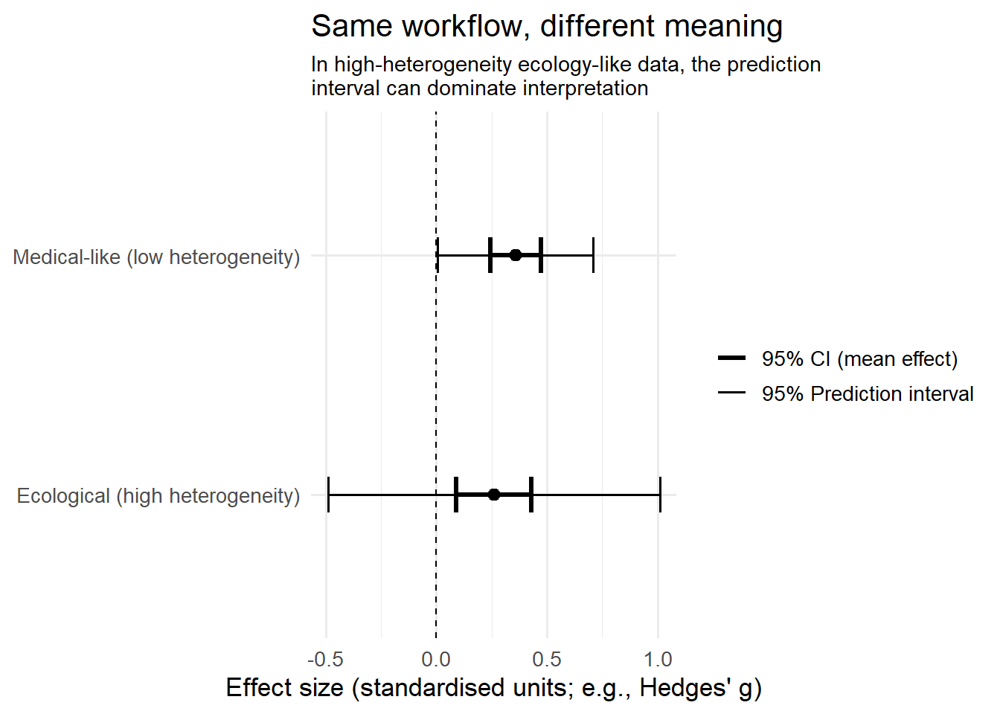

Code
library(tidyverse)
library(metafor)
set.seed(1) # for reproducibility
theme_set(theme_minimal(base_size = 13))A lot of evidence synthesis workflows in ecology and conservation are inherited (directly or indirectly) from medicine. That is not inherently bad, meta-analysis is meta-analysis, but it becomes a problem when we quietly import assumptions that do not hold.
In medicine, many meta-analyses are built around relatively comparable interventions and outcomes, and heterogeneity is often treated as a complication to explain away.
In ecology, heterogeneity is often the whole story: context dependence, non-independence, different systems, different scales, different proxies, and (often) small sample sizes.
This post uses a simple simulation to show how “standard-looking” meta-analysis outputs can mean very different things in these two worlds.
library(tidyverse)
library(metafor)
set.seed(1) # for reproducibility
theme_set(theme_minimal(base_size = 13))We simulate two evidence bases with the same true average effect but different structure:
Medical-like world: low heterogeneity (studies are fairly comparable)
Ecological world: high heterogeneity (effects vary substantially by context)
We will generate effect sizes (Hedges’ g-like) and sampling variances, then fit a random-effects model to each.
simulate_world <- function(k = 30, mu = 0.3, tau = 0.1, vi_range = c(0.02, 0.15), label = "World") {
vi <- runif(k, min = vi_range[1], max = vi_range[2]) # sampling variances
theta_i <- rnorm(k, mean = mu, sd = tau) # true study effects (heterogeneity)
yi <- rnorm(k, mean = theta_i, sd = sqrt(vi)) # observed effects
tibble(world = label, study = paste0("Study ", seq_len(k)), yi = yi, vi = vi)
}
dat <- bind_rows(simulate_world(k = 30, mu = 0.3, tau = 0.08, label = "Medical-like (low heterogeneity)"), simulate_world(k = 30, mu = 0.3, tau = 0.45, label = "Ecological (high heterogeneity)"))
dat# A tibble: 60 × 4
world study yi vi
<chr> <chr> <dbl> <dbl>
1 Medical-like (low heterogeneity) Study 1 0.131 0.0545
2 Medical-like (low heterogeneity) Study 2 0.394 0.0684
3 Medical-like (low heterogeneity) Study 3 0.612 0.0945
4 Medical-like (low heterogeneity) Study 4 0.324 0.138
5 Medical-like (low heterogeneity) Study 5 0.537 0.0462
6 Medical-like (low heterogeneity) Study 6 0.521 0.137
7 Medical-like (low heterogeneity) Study 7 0.131 0.143
8 Medical-like (low heterogeneity) Study 8 0.417 0.106
9 Medical-like (low heterogeneity) Study 9 -0.219 0.102
10 Medical-like (low heterogeneity) Study 10 0.590 0.0280
# ℹ 50 more rowsWe fit a random-effects model (rma) and compute:
the pooled mean and 95% CI (what people often quote)
the estimated heterogeneity (tau)
the 95% prediction interval (what you should care about for “what might happen in a new context”)
worlds <- unique(dat$world)
summ_list <- vector("list", length(worlds))
names(summ_list) <- worlds
for (w in worlds) {
df <- dat[dat$world == w, ]
m <- rma(yi = df$yi, vi = df$vi, method = "REML")
pr <- predict(m)
summ_list[[w]] <- data.frame(
world = w,
k = m$k,
mu_hat = as.numeric(m$b),
ci_lb = as.numeric(m$ci.lb),
ci_ub = as.numeric(m$ci.ub),
tau = sqrt(as.numeric(m$tau2)),
tau2 = as.numeric(m$tau2),
pi_lb = as.numeric(pr$pi.lb[1]),
pi_ub = as.numeric(pr$pi.ub[1]),
row.names = NULL
)
}
summ <- do.call(rbind, summ_list)
summ world k mu_hat
Medical-like (low heterogeneity) Medical-like (low heterogeneity) 30 0.3584064
Ecological (high heterogeneity) Ecological (high heterogeneity) 30 0.2598028
ci_lb ci_ub tau tau2
Medical-like (low heterogeneity) 0.24426636 0.4725465 0.1694701 0.02872013
Ecological (high heterogeneity) 0.09098831 0.4286173 0.3727368 0.13893269
pi_lb pi_ub
Medical-like (low heterogeneity) 0.007186916 0.7096259
Ecological (high heterogeneity) -0.489998859 1.0096045Figure 1: the same pooled estimate can imply very different decision-relevance A common failure mode in ecological synthesis is to focus on the pooled mean and its significance while ignoring that the prediction interval may span meaningful positive and negative outcomes.
This figure draws (1) the pooled mean + 95% CI and (2) the 95% prediction interval for both worlds.
summ_long <- summ |>
pivot_longer(
cols = c(ci_lb, ci_ub, pi_lb, pi_ub),
names_to = c("interval", "bound"),
names_pattern = "(ci|pi)_(lb|ub)",
values_to = "value"
) |>
pivot_wider(names_from = bound, values_from = value) |>
mutate(interval = recode(interval, ci = "95% CI (mean effect)", pi = "95% Prediction interval"))
ggplot(summ_long, aes(y = world, x = mu_hat)) +
geom_vline(xintercept = 0, linetype = "dashed", linewidth = 0.5) +
geom_errorbar(aes(xmin = lb, xmax = ub, linewidth = interval), height = 0.15) +
geom_point(size = 2.4) +
scale_linewidth_manual(values = c("95% CI (mean effect)" = 1.2, "95% Prediction interval" = 0.7)) +
labs(
x = "Effect size (standardised units; e.g., Hedges' g)",
y = NULL,
title = "Same workflow, different meaning",
subtitle = stringr::str_wrap(
"In high-heterogeneity ecology-like data, the prediction interval can dominate interpretation",
width = 60
),
linewidth = NULL
) +
theme(plot.subtitle = element_text(size = 11))
In the medical-like world, the prediction interval is reasonably tight: a new study is likely to be in the same ballpark.
In the ecological world, the prediction interval may span large negative to large positive effects. The pooled mean still exists, but it is a weak guide to what happens in a new place/time/species/system.
Figure 2: forest plots that look similar can hide very different structure Next we draw a lightweight “forest-plot-like” figure for both worlds using ggplot.
dat_plot <- dat |>
mutate(
study_num = readr::parse_number(study)
) |>
group_by(world) |>
mutate(
w = 1 / vi,
se = sqrt(vi),
ci_lb = yi - 1.96 * se,
ci_ub = yi + 1.96 * se,
study = forcats::fct_reorder(study, study_num)
) |>
ungroup()
ggplot(dat_plot, aes(y = fct_rev(study), x = yi)) +
geom_vline(xintercept = 0, linetype = "dashed", linewidth = 0.5) +
geom_errorbarh(aes(xmin = ci_lb, xmax = ci_ub), height = 0.15) +
geom_point(aes(size = w)) +
scale_size_continuous(range = c(1.2, 3.8), guide = "none") +
facet_wrap(~world, scales = "free_y", ncol = 1) +
labs(x = "Effect size", y = NULL, title = "Study-level effects in two evidence worlds", subtitle = "Both are 'meta-analysable' — but only one behaves like many people expect")
What this means in practice (especially for conservation decisions) If you are synthesising ecological evidence and your heterogeneity is high (common!), then:
“The pooled effect is significant” may be scientifically correct but decision-irrelevant.
Prediction intervals are often more honest for “what might happen next time”.
Meta-regression and multilevel models can help, but they do not magically fix structural mismatch (small k, correlated moderators, measurement proxies).
If the prediction interval crosses zero widely, the review’s main conclusion should not be phrased as a single-direction claim without a strong context qualification.